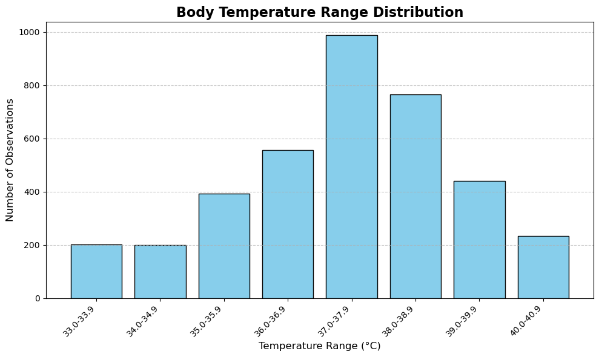

Heart Rate & Body Temperature Relationship Models
Machine Learning Model Performance Metrics

Distribution analysis of body temperature ranges in children admitted to PICU, showing the frequency and patterns of temperature variations across the patient population.
.png)
Visualization of the relationship between heart rate and body temperature segmented by age groups, demonstrating how the relationship varies across different pediatric age categories in PICU.
.png)
Comprehensive correlation matrix showing relationships between heart rate, body temperature, and other clinical variables in PICU children, highlighting key associations and dependencies.
.png)
Mean Squared Error (MSE) metric evaluating the average squared difference between predicted and actual heart rate values in the relationship analysis model.
.png)
Root Mean Squared Error (RMSE) providing the standard deviation of prediction errors, measured in the same units as heart rate (bpm) for the relationship model.
.png)
Coefficient of determination (R²) measuring the proportion of variance in heart rate explained by body temperature and other features in the relationship model.
.png)
Quantile regression loss function used in the machine learning model to capture the relationship between heart rate and body temperature across different quantiles and distributions.
.png)
Explainable AI using SHAP (SHapley Additive exPlanations) values to interpret model predictions and understand feature contributions to heart rate and body temperature relationship analysis.